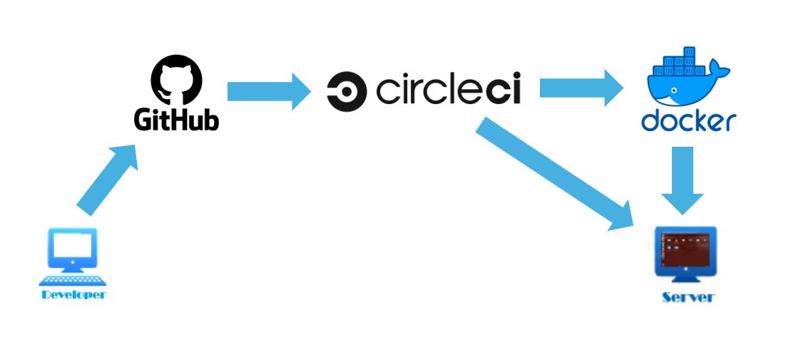
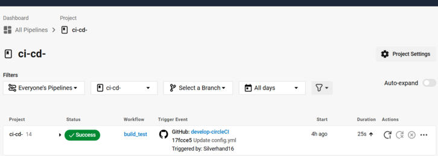
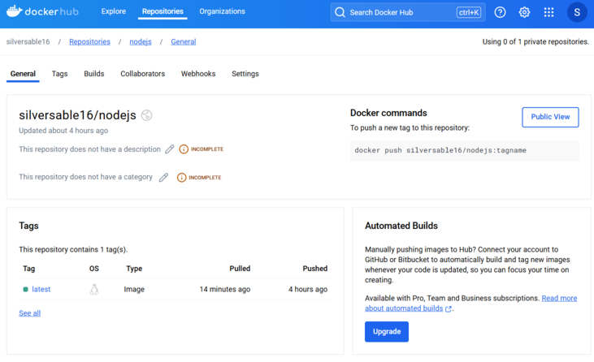
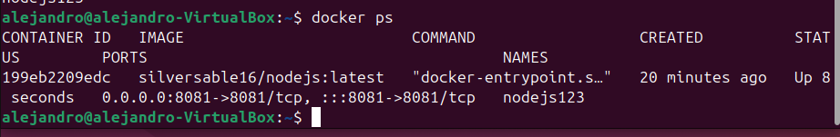
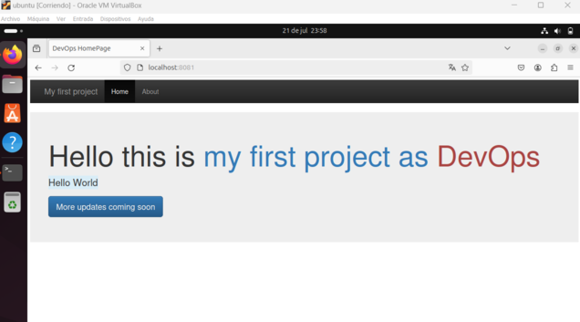

DevOps CI/CD with Node.js, Docker, and CircleCI
Steps

Project Steps
- Clone Repository:
- CircleCI Pipeline Configuration:
- Created a new branch for developing the CI/CD pipeline.
- Defined the pipeline in a `.circleci/config.yml` file, specifying the version, jobs, and sequences required for the CI/CD process.
- Configured jobs to build Docker images, run tests, and deploy the application in both test and production environments.
- Building the Docker Image:
- Installed dependencies using npm and configured the Dockerfile to build the Docker image of the Node.js application.
- Optimized the build process using Docker layer caching to save time and resources.
- Logged in to Docker Hub and configured environment variables for image deployment.
- CircleCI Configuration and Activation:
- Used Git commands to add and commit configuration files to ensure CircleCI detects and executes the configurations.
- Automated builds and deployments with CircleCI to streamline the integration and deployment processes.
- Automated Deployment:
- Deployed the application in a Docker container to ensure consistency across different environments.
- Configured CircleCI to automatically trigger deployments and publish Docker images to Docker Hub upon successful builds.
- Downloaded the Docker image to a virtual machine for final execution and testing.
CI/CD Workflow
- Continuous Integration (CI):
- Combine code into the master branch to centralize integration.
- Perform code reviews to ensure quality and consistency.
- Run builds and unit/integration tests to verify code functionality and correctness.
- Continuous Delivery (CD):
- Deploy the application to a test server (e.g., VirtualBox VM) for validation.
- Conduct User Acceptance Testing (UAT) and quality control.
- Deliver builds throughout the development cycle for ongoing evaluation and feedback.
- Continuous Deployment (CD):
- Deploy the Docker image to a production server or release environment.
- If successful, publish the image on Docker Hub and then deploy it to the virtual machine.
- Also plan for deployment to cloud servers, replicating the workflow in cloud production environments.
Project Advancements
Circleci

Dockerhub

Docker ps

App running

project based on
https://www.youtube.com/watch?v=9U55bShQIgQ
Back to Top